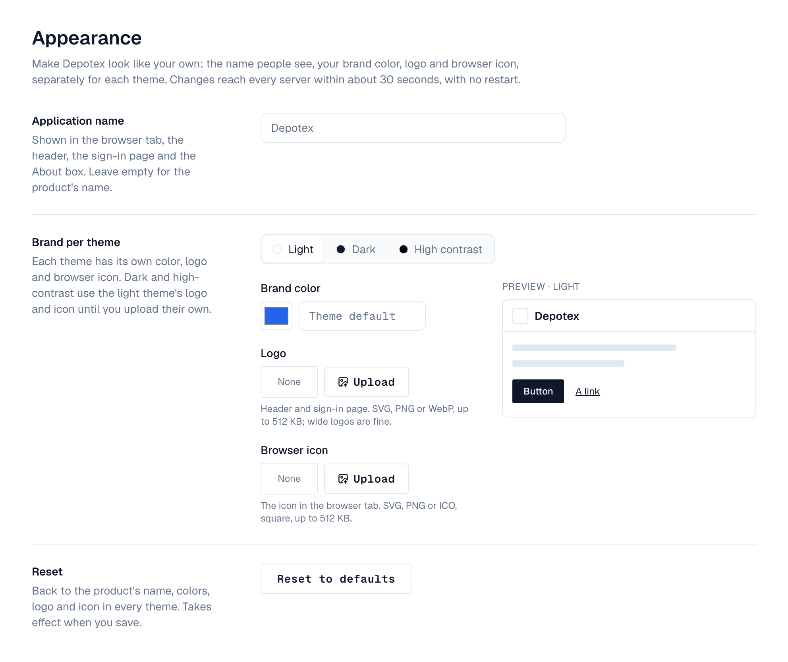
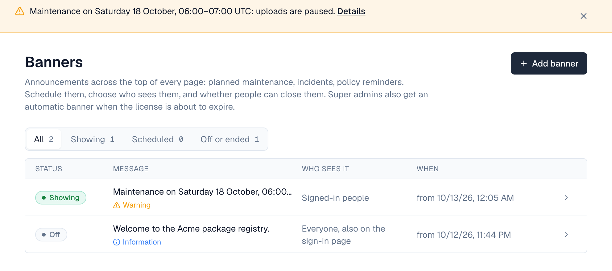
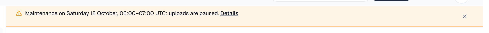

1. Overview
Make Depotex look like your own product, and tell people about maintenance or incidents with banners across the top of every page. Changes reach every server within about 30 seconds; nothing needs a restart. Both are under Settings, for people with settings:write (super admins).
| Feature | Where | License |
|---|---|---|
| App name, brand colors, logos, browser icons | Settings → Appearance | Enterprise |
| Banners | Settings → Banners | Every tier |
| Your own links in the Help (?) menu | Settings → General → Help menu | Every tier |
2. Appearance

- Name — Application name replaces Depotex in the browser tab, the header, the sign-in page (as “<name> package registry” on its brand panel, with Depotex kept next to the logo), the About box and emails. Leave it empty for the product's name.
- Brand color — Under Brand per theme, pick Light, Dark or High contrast to edit that theme; a preview beside the fields shows its header with your name, logo and icon, a button and a link. Set a color for the light and dark themes (Use default clears it). Depotex works out the hover shade and whether text on the color should be white or dark, and refuses a color people couldn't read: text on it must reach a 4.5:1 contrast, and it must stand out from the theme's background (3:1), since links and focus outlines use it too. The page shows both numbers as you choose.
- High contrast — The high-contrast theme keeps its accessible colors unless you tick Use a brand color in the high-contrast theme too. Logos apply to it either way.
- Logos and browser icons — Upload per theme (SVG, PNG, WebP, ICO or JPEG, up to 512 KB). A theme without its own uses the light theme's. The header shows the logo; the sign-in page shows it on its dark panel, so it uses the dark theme's logo there (or the light one when there's none). The browser tab shows the icon for the theme each person chose, and changes when they switch.
- Save — Changes wait in a bar at the bottom of the page: Save applies them, Discard drops them. A color that fails the contrast rules can't be saved. Open pages show the change when they're next loaded. Reset to defaults clears all branding in the form; save to apply it.
Uploaded images are served from addresses that change with their content, so browsers keep them cached for a year and a new upload shows at once. SVG files can't run scripts: they're served in a sandbox. Images you replaced are deleted a day later.
3. Banners
Under Settings → Banners, select Add banner or a banner in the list. Each opens its own page with a preview of the banner at the top, as it will appear on every page:
| Setting | Choices |
|---|---|
| Message | Up to 500 characters of plain text. Write link text for a link |
| Level | Information, Warning or Problem, in the theme's colors (problems are announced to screen readers at once) |
| Who sees it | Signed-in people, Everyone, also on the sign-in page, or Super admins only |
| Show from / Until | When it appears and, optionally, when it ends; in your time zone. Without an end it shows until you turn it off |
| People can close it | When on, a closed banner stays closed in that browser until you edit it. When off, it can't be closed |
| On | Turn it off without deleting it |


Several banners show together, problems first. Pages ask for banners when they open, when people come back to the tab, and every few minutes, so a new or ended banner shows within a few minutes. The list shows each banner's status (Showing, Scheduled, Ended or Off), message, level, who sees it and when; filter it with All, Showing, Scheduled and Off or ended. To delete a banner, open it and select Delete… at the bottom of its page.
4. License expiry banner
Super admins get an automatic banner about the license, with a Manage license link: from 30 days before it expires as information, as a warning in the last 14 days, and as a problem in the last 7 days, while it's in its grace period, after it expired, and when it isn't valid. Information and warnings can be closed for the day; problems stay until the license is renewed. Other people never see it.
Operators change when it starts with LICENSE_BANNER_DAYS on every server (days, 0 to 365; 0 turns it off). An invalid value stops the server at startup with a message saying so.
5. Help menu links
Under Settings → General → Help menu, add up to five of your own links, each with a title and an https:// or mailto: address (your service desk, an internal wiki, a status page). They appear in their own group in the Help (?) menu.
6. Events
branding.update (blocking: policies can refuse a change) and banner.create, banner.update, banner.delete. Changes are in the audit log.